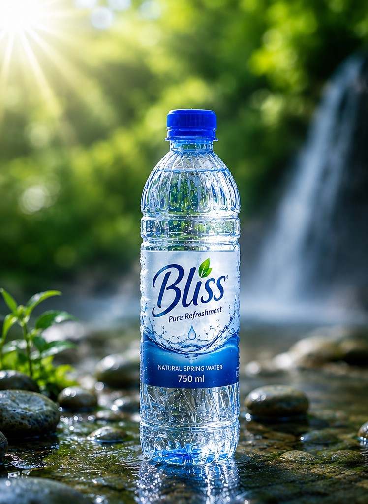
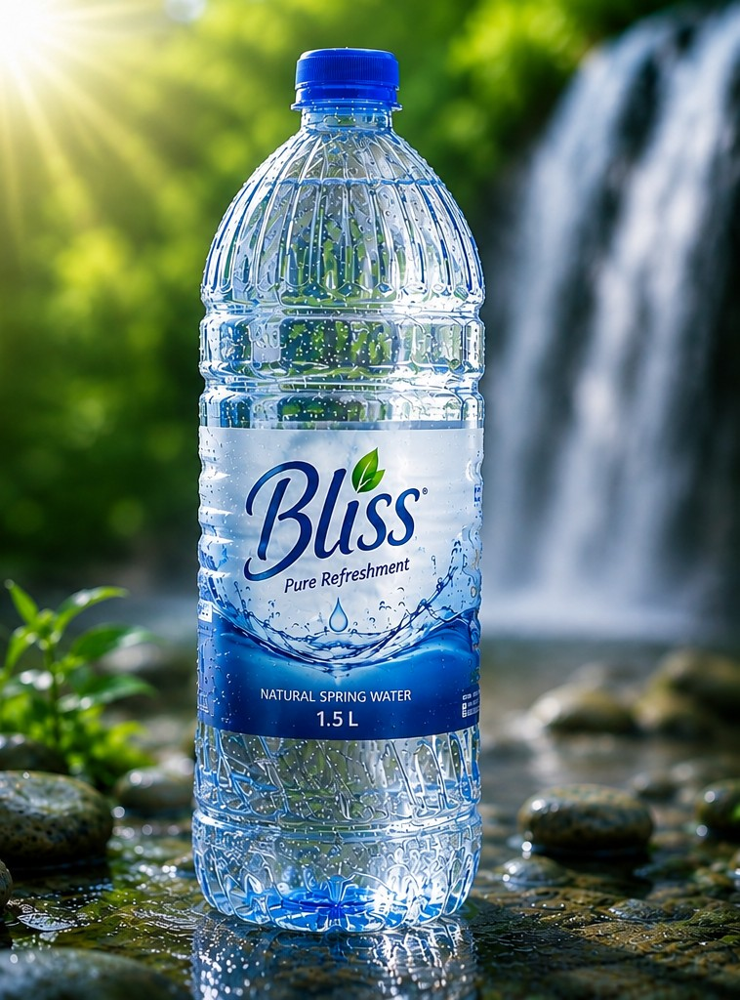

Our Products

500ml Bliss
Our most practical size, ideal for refreshments while on the run.
R8 - R12

750ml Bliss
A healthy size for regular hydration at the gym, at work, or at home.
R10 - R15

1.5L Bliss
Our biggest size, perfect for sharing, offices, and families.
R12 - R18
Our Pricing Strategy
Our prices reflect the careful process of selecting, treating, bottling, packaging, and distributing each bottle, aiming to keep Bliss accessible without compromising quality.
Bliss offers affordable-premium filtered water, balancing quality and accessibility for South African consumers.